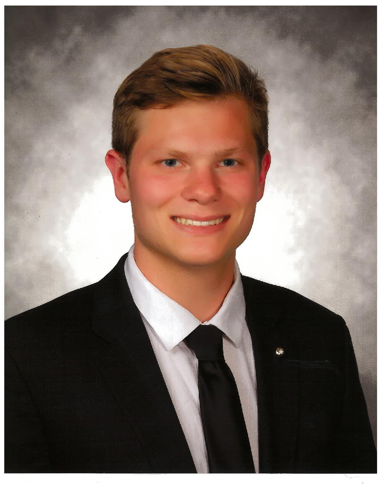

Matt Stahulak
Business Management Major from the University of Missouri-Columbia | Technology Solutions Specialist at RIM Logistics | Aspiring Web Developer
Link to Resume
My name is Matthew Stahulak and I am a fifth-year student from Naperville, Illinois. I am majoring in Business Management and also looking to receive certificates in Supply Chain Management and Information Systems and Technology. I grew up interested in computers and have always been incredibly tech-savvy. My interests include traveling, EDM music, music festivals/concerts, and spending quality time with my friends and family.
I currently work for a supply chain and logistics company called RIM Logistics as a Technology Support Specialist. I started with this company as an intern 2 summers ago and hope to move up the ranks within their IT department. In my job, I manage a help desk and receive requests from employees around the company and troubleshoot their issues/concerns within the Logistics software we use, CargoWise . I recently achieved the highest level of certification within CargoWise's certification program and hope to expand and apply my knowledge in the years to come.
My name is Matthew Stahulak and I am a fifth-year student from Naperville, Illinois. I am majoring in Business Management and also looking to receive certificates in Supply Chain Management and Information Systems and Technology. I grew up interested in computers and have always been incredibly tech-savvy. My interests include traveling, EDM music, music festivals/concerts, and spending quality time with my friends and family.
I currently work for a supply chain and logistics company called RIM Logistics as a Technology Support Specialist. I started with this company as an intern 2 summers ago and hope to move up the ranks within their IT department. In my job, I manage a help desk and receive requests from employees around the company and troubleshoot their issues/concerns within the Logistics software we use, CargoWise . I recently achieved the highest level of certification within CargoWise's certification program and hope to expand and apply my knowledge in the years to come.
"You have power over your mind - not outside events. Realize this, and you will find strength." -Marcus Aurelius